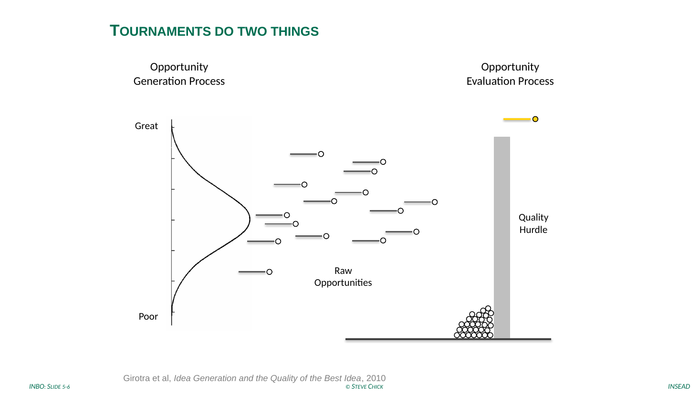
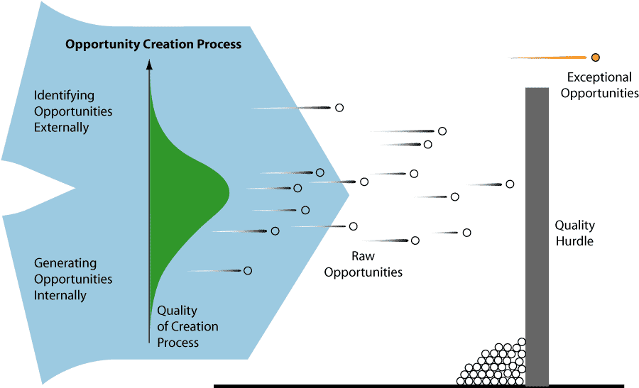
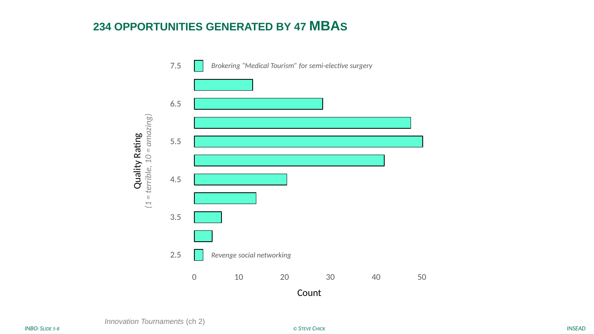
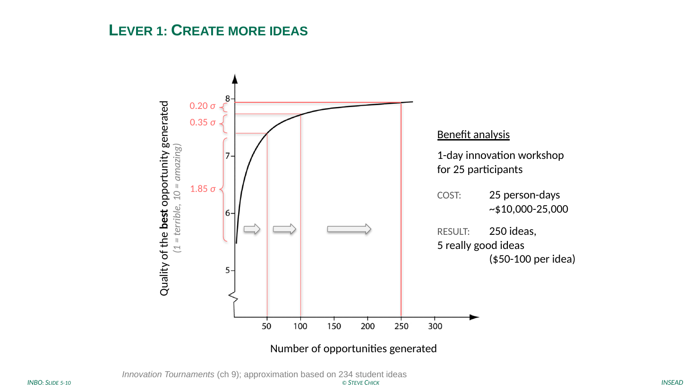
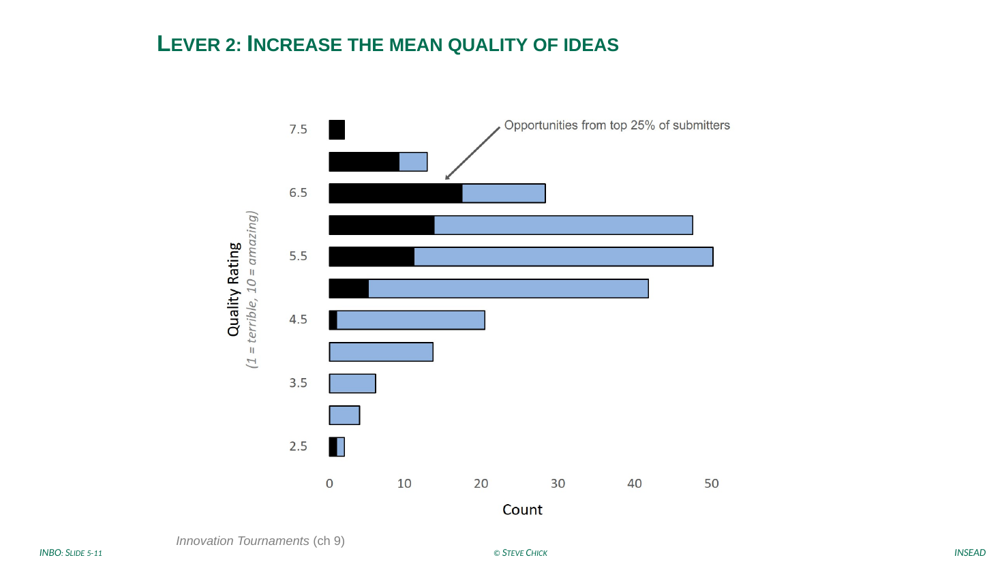
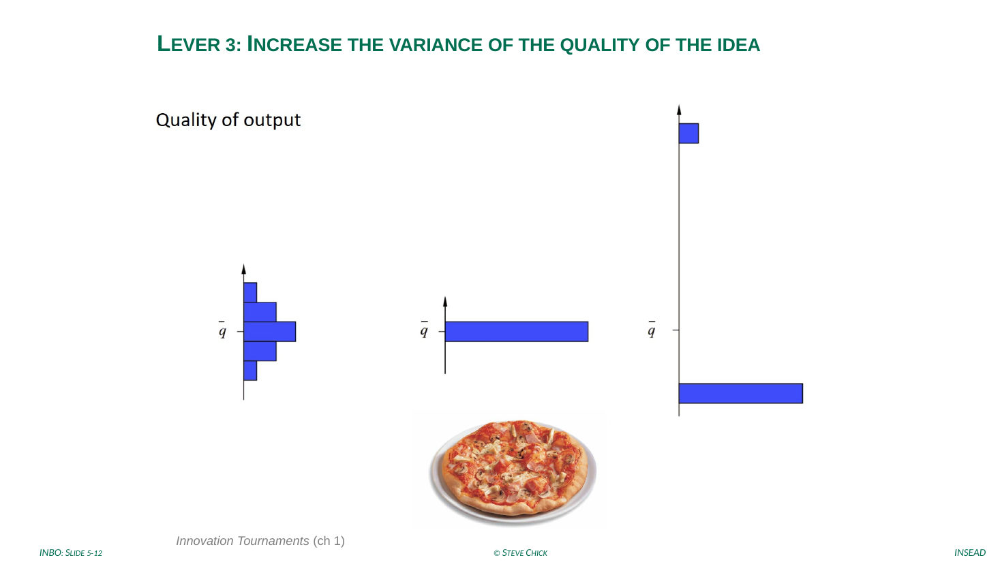
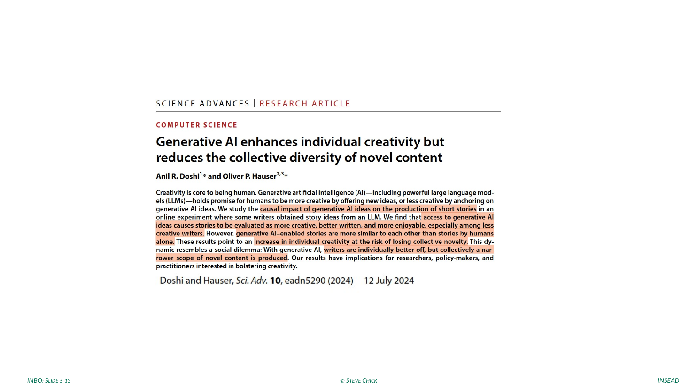
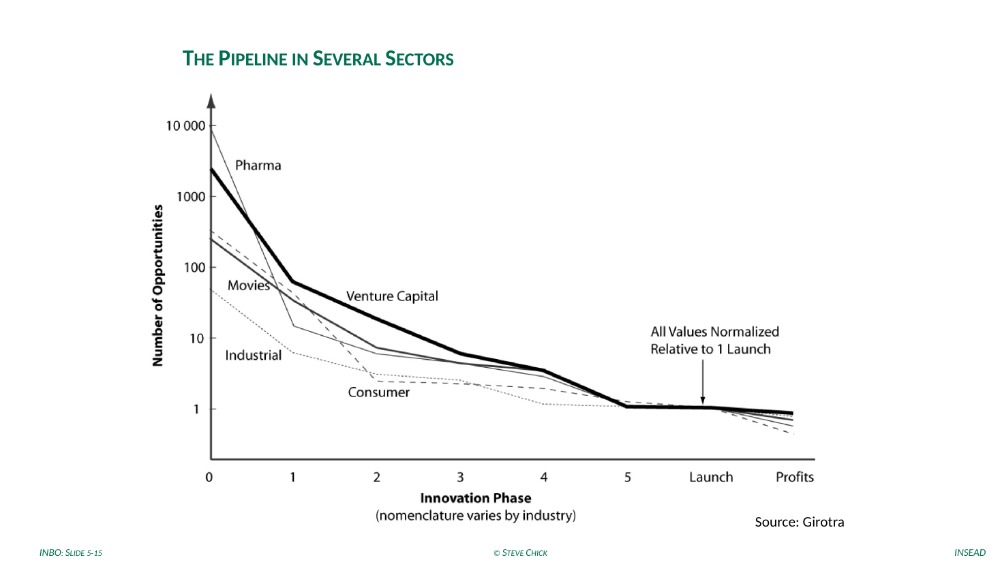

From tournament to venture — with NIO & Better Place Stephen E. Chick · INSEAD
1
How do we generate great opportunities?
Turn to your neighbor. Ninety seconds.
2
Tournaments do two things: generate, then screen

3
Girotra, Terwiesch and Ulrich, Management Science 2010
Four levers run the idea factory.
01
Take more draws
Generate more opportunities.
02
Shift the mean
Raise the average quality.
03
Raise the variance
Wider spread, weirder ideas.
04
Evaluate better
Select among them more accurately.
We care only about the right tail: the quality of the best idea, not the average.
“Idea Generation and the Quality of the Best Idea.” Pre-read: Innovation Tournaments, ch. 3.

Girotra, Terwiesch & Ulrich, “Idea Generation and the Quality of the Best Idea,” Management Science, 2010. Course pre-read: Innovation Tournaments, ch. 3.
4
47 MBAs generated 234 opportunities

5
Lever 1 · more draws lifts the best

6
Lever 2 · shift the mean

7
Lever 3 · raise the variance

8
The best of many

9
Lever 4 · improve accuracy of evaluation
Better screening is a lever in its own right.
Use more independent evaluations.Aggregate judgements (BIN); the crowd beats the individual.
Anchor on purchase intent.Base evaluation on would-you-buy, not would-you-like.
Screen in stages.Multiple, cheaper-first passes before expensive commitment.
10
The pipeline recurs across sectors

11
Spend little on many; spend more on the survivors.
Quality of opportunity, as a venture moves through the funnel